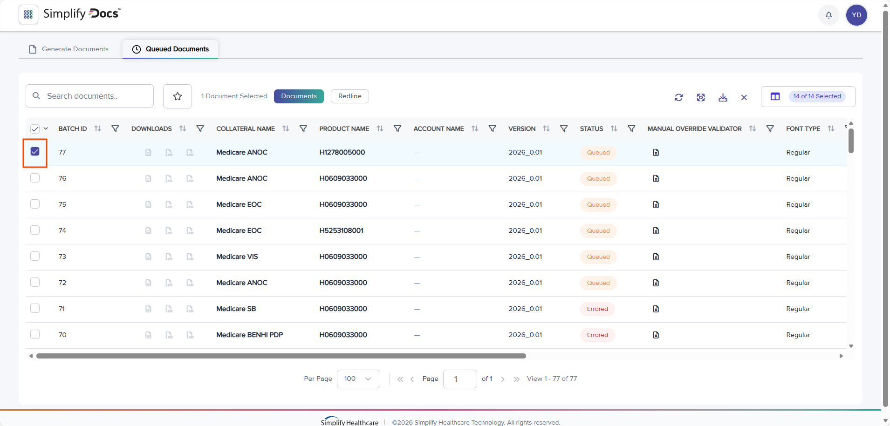
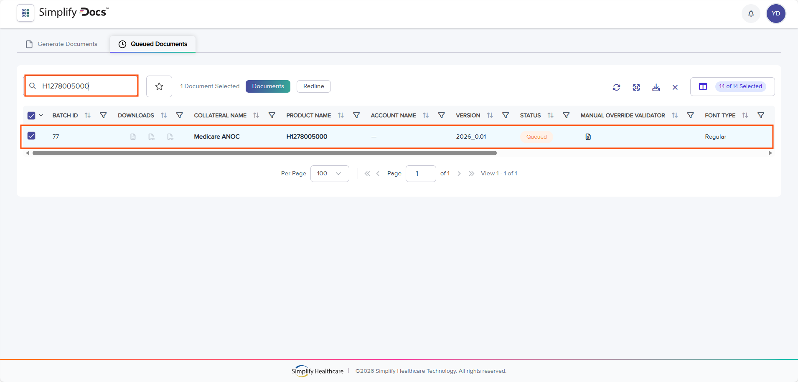
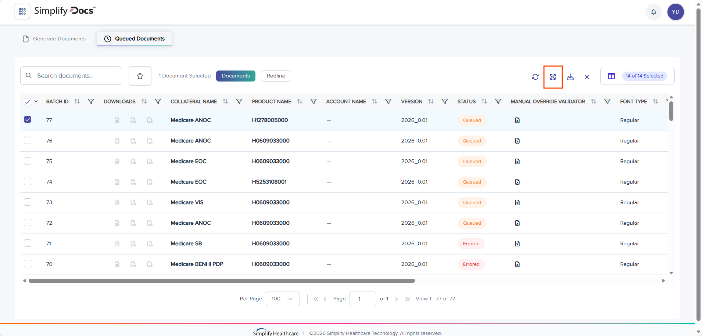
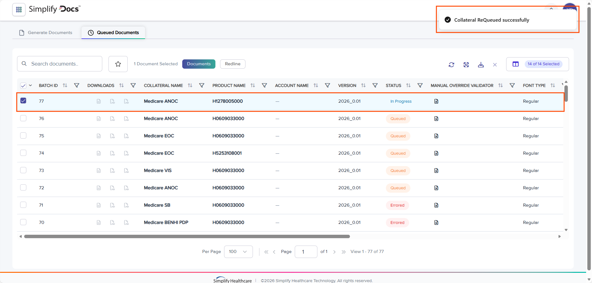
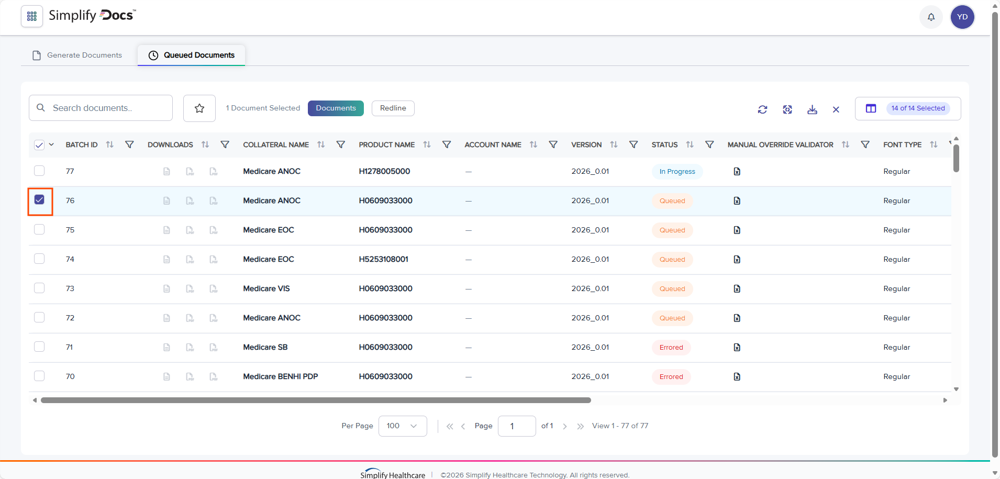
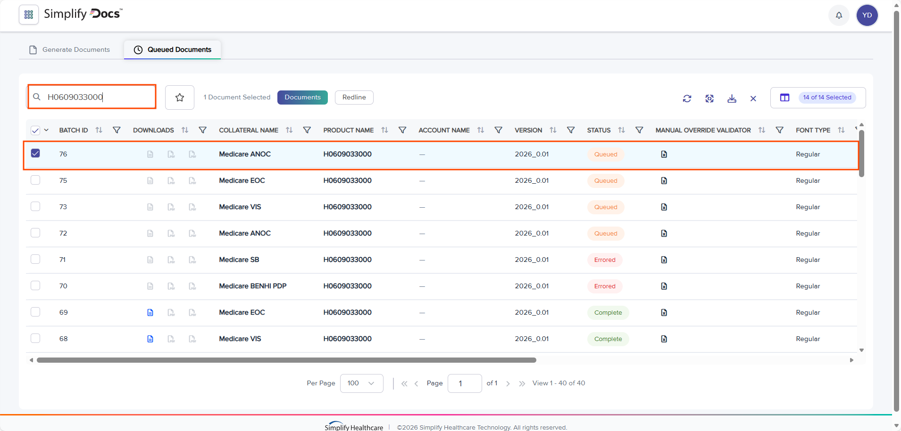
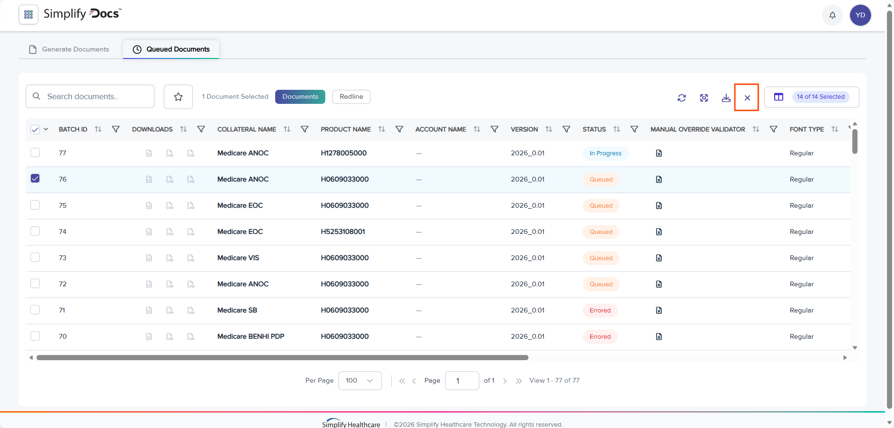
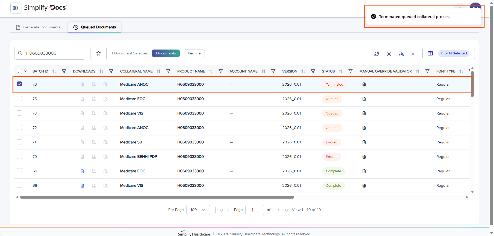

Add New Template
The Add New Template functionality allows users to create a new template as required.
To add a new Template, follow the steps below:
- To access the Generate Documents page, follow steps 1 to 5 of the Access the Generate Documents process under the Production Hub/Generate/Generate Documents section of the user guide.
- Click the + icon.

+ icon
- The Add New Template section appears.

Add New Template section
- Click the Template Name field and enter the template name as required.

Template Name field
- Click the View drop-down and select the view from the list as applicable. Users can choose only one View at a time.

View drop-down
- By default, the Allow Combined Documents radio button is selected. If the user wants, they can select either the Filling Template or the DocGen Light Template radio button as applicable.

Radio button selection
- Click the Add Template button.

Add Template button
- The new Template gets added to the top of the Document Types list.

Newly Added Template
Queued Documents
Access the Queued Documents
To access the Queued Documents page, follow the steps below:
- Navigate to Grid Menu button located on the upper left side of the window. Click the Grid Menu button.

Grid Menu button
- The Grid Menu gets expanded.

Expanded Grid Menu
- Click the Production Hub expand button.

Production Hub expand button
- Click the Generate button.

Generate button
- The Generate Documents window opens.

Generate Documents window
- Click the Queued Documents tab.

Queued Documents tab
- The Queued Documents window opens.

Queued Documents window
Download the Generated/Published Document
The Download Word, Download 508 PDF, Download PrintX PDF, and Download Excel functionality allows users to download the Generated or Published Document to Word/508 PDF/PrintX PDF/Excel format to their local system for their access.
To download the Generated or Published Document into the Word format, follow the steps below:
- To access the Queued Documents page, follow steps 1 to 7 of the Access the Queued Documents process under the Production Hub/Generate/Queued Documents section of the user guide.
- Click the Download Word icon.
Note:
Users can download the Word file only if the Document Status is marked as Complete.

Download Word icon
- The Document gets downloaded in the Word format to the user's local system for their access. Users can open the Word file and take any necessary actions, if required.

Downloaded Word file
Note:
If the user wants to download the Generated or Published Document as a Word file to their local system from Redline Document, click the Redline tab.
The Redline tab opens.
To download the Generated or Published Document as a Word file, follow steps 2 and 3 mentioned above.
- If the user wants to download the Generated or Published Document in 508 PDF format, click the Download 508 PDF icon.
Note:
Users can download the 508 PDF file only if the Document Status is marked as Complete.

Download 508 PDF icon
- The Document gets downloaded in the 508 PDF format to the user's local system for their access. Users can open the 508 PDF file and take any necessary actions, if required.

Downloaded 508 PDF file
Note:
If the user wants to download the Generated or Published Document in 508 PDF format to their local system from Redline Document, click the Redline tab.
The Redline tab opens.
To download the Generated or Published Document in 508 PDF format , follow steps 4 and 5 mentioned above.
- If the user wants to download the Generated or Published Document in PrintX PDF format, click the Download PrintX PDF icon.
Note:
Users can download the PrintX PDF file only if the Document Status is marked as Complete.

Download PrintX PDF icon
- The Document gets downloaded in the PrintX PDF format to the user's local system for their access. Users can open the PrintX PDF file and take any necessary actions, if required.

Downloaded PrintX PDF file
Note:
If the user wants to download the Generated or Published Document in PrintX PDF format to their local system from Redline Document, click the Redline tab.
The Redline tab opens.
To download the Generated or Published Document in PrintX PDF format , follow steps 6 and 7 mentioned above.
- If the user wants to download the Generated or Published Document in Excel format, click the Download Excel icon.
Note:
Users can download the Excel file only if the Document Status is marked as Complete.

Download Excel icon
- The Document gets downloaded in Excel format to the user's local system for their access. Users can open the Excel file and take any necessary actions, if required.

Downloaded Excel file
Note:
If the user wants to download the Generated or Published Document in Excel format to their local system from Redline Document, click the Redline tab.
The Redline tab opens.
To download the Generated or Published Document in Excel format , follow steps 8 and 9 mentioned above.
Requeue
The Requeue functionality allows users to requeue the selected Generated or Published Document(s).
To Requeue the selected Generated or Published Document(s), follow the steps below:
- To access the Queued Documents page, follow steps 1 to 7 of the Access the Queued Documents process under the Production Hub/Generate/Queued Documents section of the user guide.
- Select the Collab Id(s)/Process Id(s) from the list. To select the Collab Id(s)/Process Id(s) from the list, click the checkbox(s), and the checkbox(s) gets selected with a checkmark icon. Users can choose one or more Collab Id(s)/Process Id(s) at a time.
Note:
Users can utilize the Search documents option to find the appropriate Product Name from the Documents list.
For example:
Enter the valid Product Name into the Search documents search box. Users can see that the appropriate Product Name gets searched and appears on the window.

Product Name selection

Search documents search box & Searched Product Name
- Click the Requeue icon.

Requeue icon
- The Document(s)/Collateral(s)ReQueued successfully, and the status of the selected Document(s)/Collateral(s) gets changed to In Progress and then Queued.

Updated Status
Terminate
The Terminate functionality allows users to terminate the selected Queued Document(s).
To Terminate the selected Queued Document(s), follow the steps below:
- To access the Queued Documents page, follow steps 1 to 7 of the Access the Queued Documents process under the Production Hub/Generate/Queued Documents section of the user guide.
- Select the Collab Id(s)/Process Id(s) from the list. To select the Collab Id(s)/Process Id(s) from the list, click the checkbox(s), and the checkbox(s) gets selected with a checkmark icon. Users can choose one or more Collab Id(s)/Process Id(s) at a time.
Note:
Users can utilize the Search documents option to find the appropriate Product Name from the Documents list.
For example:
Enter the valid Product Name into the Search documents search box. Users can see that the appropriate Product Name gets searched and appears on the window.

Product Name selection

Search documents search box & Searched Product Name
- Click the Terminate icon.

Terminate icon
- The selected Queued Document(s) gets Terminated, and the status of the selected Queued Document(s) gets changed to Terminated.

Updated Status
Bulk Download
The Bulk Download functionality allows users to download the selected Document(s) in bulk.
To download the selected Documents(s) in bulk, follow the steps below:
- To access the Queued Documents page, follow steps 1 to 7 of the Access the Queued Documents process under the Production Hub/Generate/Queued Documents section of the user guide.
- Select the Collab Id(s)/Process Id(s) from the list. To select the Collab Id(s)/Process Id(s) from the list, click the checkbox(s), and the checkbox(s) gets selected with a checkmark icon. Users can choose one or more Collab Id(s)/Process Id(s) at a time.
Note:
Users can utilize the Search documents option to find the appropriate Product Name from the Documents list.
For example:
Enter the valid Product Name into the Search documents search box. Users can see that the appropriate Product Name gets searched and appears on the window.

Product Name selection

Search documents search box & Searched Product Name
- Click the Bulk Download icon.

Bulk Download icon
- The Select Format pop-up window appears.

Select Format pop-up window
- Click the Zip File Name field and enter the zip file name as required.

Zip File Name field
- Select the File Type. To select the File Type, click the checkbox(s), and the checkbox(s) gets selected with the checkmark icon. Users can choose either Word, 508 PDF, or Print as a File Type, or all

File Type selection
- Click the Download button.

Download button
- The selected Bulk Document(s) gets downloaded in the Zip format to the user's local system for their access. Users can extract the Zip file, open the Word/508 PDF/Print file, and take any necessary actions, if required.

Downloaded Zip file
Note:
If the user wants to download selected Document(s) in bulk from the Redline Document(s), click the Redline tab.
The Redline tab opens.
To download the selected Document(s) in bulk, follow steps 2 and 8 mentioned above yogesh.